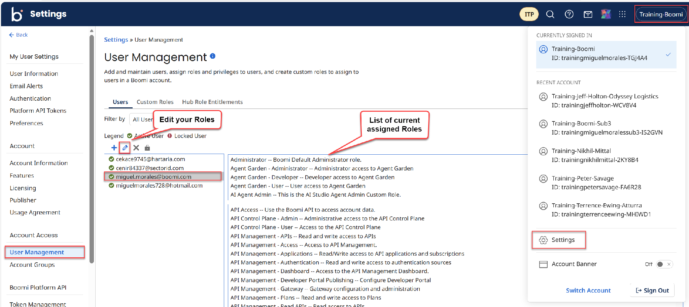
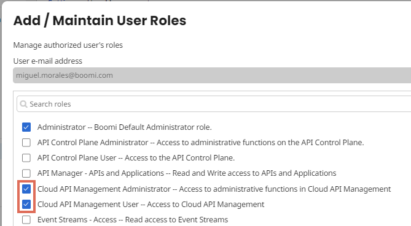
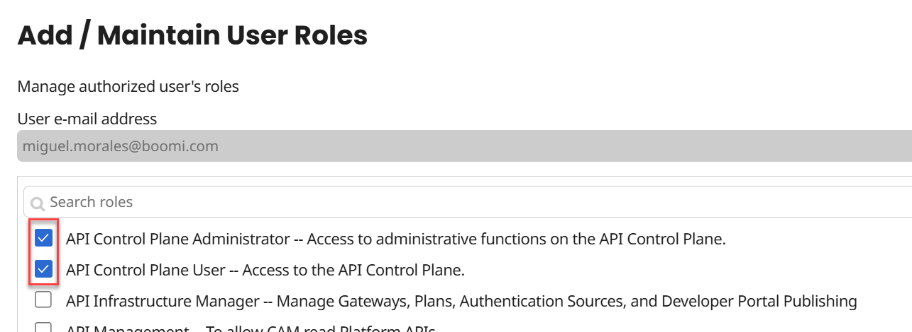
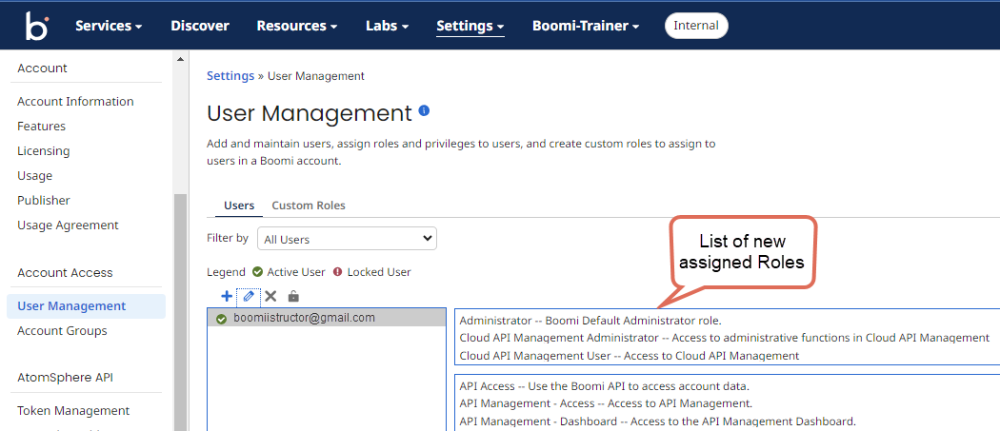
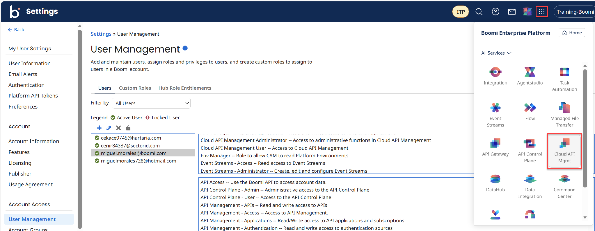
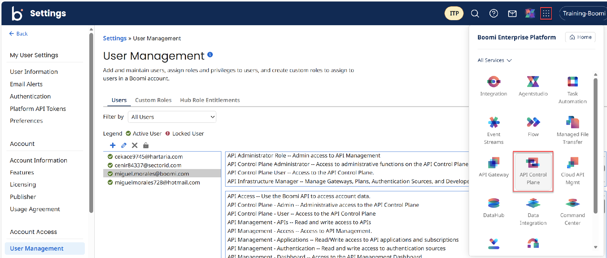

Exercise 1 — Get Set Up
Log in to your Boomi Platform training account, grant yourself the Cloud API Management and API Control Plane roles, and open both services.
The following activities will use a public Petstore API. This API will be external to the Boomi Platform and will be used to create API Definitions in Cloud API Management (CAM). The use case is that your company will start using an API that can be easy to use. You will create API Definitions, Packages, Plans and will test the API using a Developer Portal.
What you'll cover
- Login to your Platform Training Account
- Configure your User Role for Cloud API Management
- Accessing the API Services
Login to your Platform Training Account
-
1
Your first step for this activity is to login to your Boomi Platform Training Account.
-
2
Before you start this activity, close all your active browser tabs. Open a new browser session and clear your browser cache.
-
3
Go to and login.
-
4
Select the Integration service.
Note: Your Platform Training Account will require some roles to be added. The following steps will be performed only once to add these roles. The same process applies when accessing your Platform Production Account.
Configure your User Role for Cloud API Management
-
1
From the top-right, select the Account Pill > Settings.
-
2
From the left navigation select User Management. From the list of users, select your username or email address. The right side shows the list of current assigned Roles. Select the Edit (🖉) icon.

The Add/Maintain User Roles popup appears. Select the Cloud API Management Administrator and Cloud API Management User boxes. Select OK.

The Add/Maintain User Roles popup appears. Select the API Control Plane Administrator and API Control Plane User boxes. Select OK.

Note: If you have completed other courses, you may already have additional Roles assigned. -
3
The system takes you back to the User Management screen. The previous and new assigned Roles appear. This configuration is for enabling the SSO Link to Cloud API Management and API Control Plane. It only needs to be done once.

Accessing the API Services
-
1
From the top-right, go to the Service Switcher > Cloud API Management.

The system takes you to the Cloud API Management tool.
-
2
Go back to your first tab. From the top-right, go to the Service Switcher > API Control Plane.

A new browser tab opens with API Control Plane.